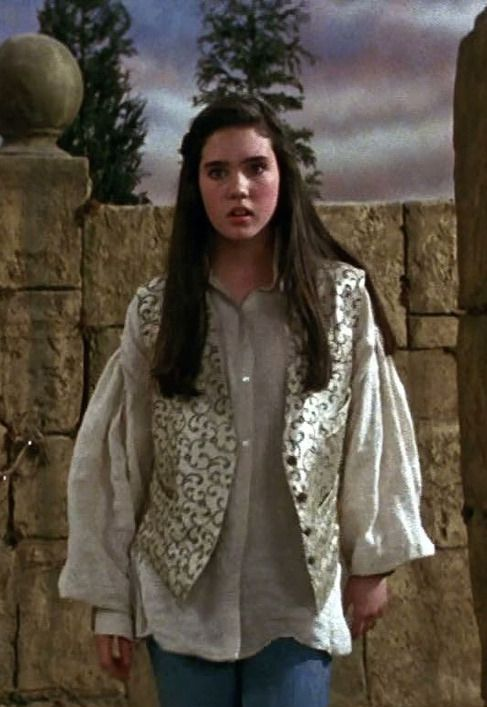

Cast
Starring
David Bowie
as Jareth

and
Jennifer Connelly
as Sarah Williams

In Order of Movie Credits
- David Bowie as Jareth
- Jennifer Connelly as Sarah Williams
- Toby Froud as Toby Williams
- Shelley Thompson as Stepmother
- Christopher Malcolm as Father
- Natalie Finland as Fairy
- Brian Henson and Shari Weiser in Labyrinth (1986)
- Shari Weiser as Hoggle
- Brian Henson as Hoggle/Goblin(voice)
- Ron Mueck as Ludo/Firey 2/Goblin(voice)
- Rob Mills as Ludo/Firey 3
- Dave Goelz as Didymus/The Hat/The Four Guards/Left Door Knocker/Firey 3(voice)
- David Alan Barclay as Didymus/Firey 1(as David Barclay)
- David Shaughnessy as Didymus/The Hat/The Four Guards/Goblin(voice)
- Karen Prell as The Worm/The Junk Lady/Firey 2
- Timothy Bateson as The Worm/The Four Guards/Goblin(voice)
- Frank Oz as The Wiseman
- Michael Hordern as The Wiseman(voice)
- Denise Bryer as The Junk Lady(voice)
- Steve Whitmire as he Four Guards/Firey 4/Ambrosius(voice)
- Kevin Clash as The Four Guards/Firey 1/Ambrosius(voice)
- Anthony Asbury as The Four Guards/Right Door Knocker/Firey 5
- Anthony Jackson as The Four Guards/Goblin(voice)
- Douglas Blackwell as The Four Guards/Goblin(voice)
- David Healy as Right Door Knocker(voice)
- Robert Beatty as Left Door Knocker(voice)
- Toby Philpott as Firey 1
- Ian Thom as Firey 2
- Charles Augins as Firey 2(voice)
- Sherry Amott as Firey 3
- Danny John-Jules as Firey 3/Firey 4(voice)
- Cheryl Henson as Firey 4
- Kaefan Shaw as Firey 4(as Kevin Bradshaw)
- Alistair Fullarton as Firey 5
- Rollin Krewson as Firey 5
- Richard Bodkin as Firey 5(voice)
- Percy Edwards as Ambrosius(voice)
- Michael Attwell as Goblin(voice)
- Sean Barrett as Goblin(voice)
- John Bluthal as Goblin(voice) (as John Bluthel)
- Peter Marinker as Goblin(voice)
- Kerry Shale as Goblin(voice)
- Marc Antona as Goblin Corps
- Kenny Baker as Goblin Corps
- Danny Blackner as Goblin Corps
- Peter Burroughs as Goblin Corps
- Toby Clark as Goblin Corps
- Tessa Crockett as Goblin Corps
- Warwick Davis as Goblin Corps
- Malcolm Dixon as Goblin Corps
- Anthony Georghiou as Goblin Corps
- Paul Grant as Goblin Corps
- John Key as Goblin Corps
- Andrew Herd as Goblin Corps
- Richard Jones as Goblin Corps
- Jack Purvis as Goblin Corps
- Mark Lisle as Goblin Corps
- Peter Mandell as Goblin Corps
- Linda Spriggs as Goblin Corps
- Katie Purvis as Goblin Corps
- Nicholas Read as Goblin Corps
- Albert Wilkinson as Goblin Corps
- Penny Stead as Goblin Corps
- Michael Henbury Ballan as Goblin Corps
- Elfrida Ashworth as Ballroom Dancer
- Margaret Foyer as Ballroom Dancer
- Elizabeth A. Gilbert as Ballroom Dancer
- Louise Gold as Ballroom Dancer
- Moira Grant as Ballroom Dancer
- San Lee as Ballroom Dancer
- Janis Mackintosh as Ballroom Dancer
- Penny Marsden as Ballroom Dancer
- Kim Mendez as Ballroom Dancer -
- Wendy Millward as Ballroom Dancer
- Leonie Palette as Ballroom Dancer
- Caroline Pope as Ballroom Dancer
- Sharon White as Ballroom Dancer
- John Aron as Ballroom Dancer
- Terry Dane as Ballroom Dancer
- Derek Hartley as Ballroom Dancer
- Dougie Howes as Ballroom Dancer(as Douglas Howes)
- Christopher Preston as Ballroom Dancer
- Peter Salmon as Ballroom Dancer
- Peter Sim as Ballroom Dancer
- Graeme Sneddon as Ballroom Dancer
- Graham Tudor-Phillips as Ballroom Dancer
- David Turner as Ballroom Dancer
- Barrie J. Wilkinson as Ballroom Dancer